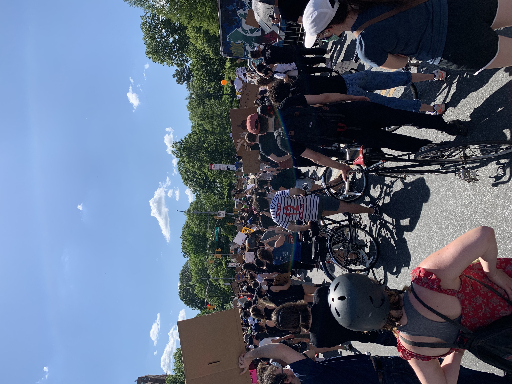

Five Largest Protests in the U.S. History

The tradition of protests that demand progressive change in the United States continue
Here are the country's five top protests in terms of attendance
- George Floyd Protest nationwide in 2020 with an estimated 26 million protestors.
- Women's March in 2017 drew about 5.6 million people nationwide.
- March for Our Lives in 2017 drew about 5.6 million people nationwide.
- Women's March in 2018 drew about 1.5 million protestors.
- March on Washington for Lesbian, Gay and Bi Equal Rights and Liberation drew about 1 million people in 1993.